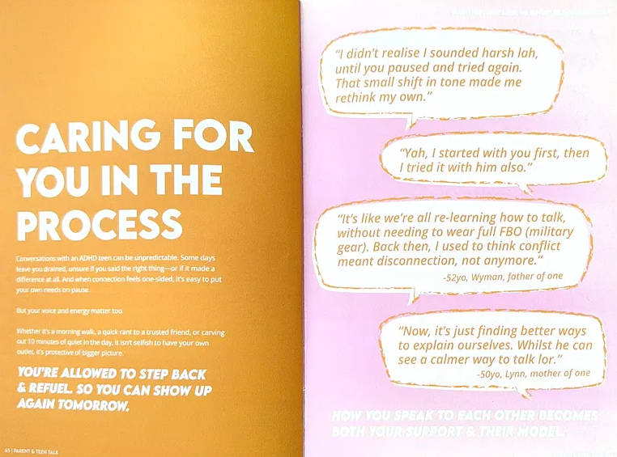
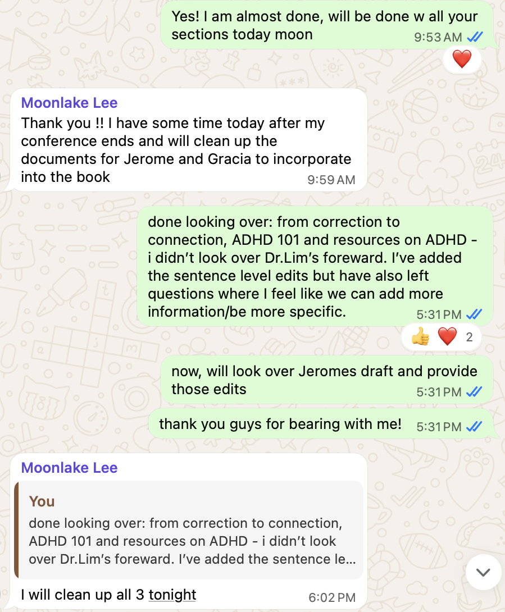
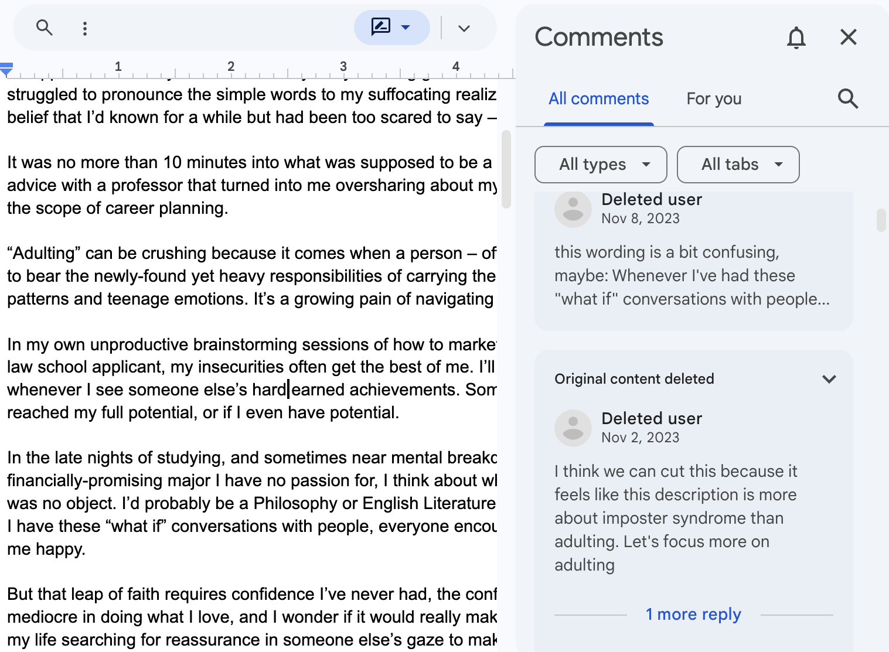
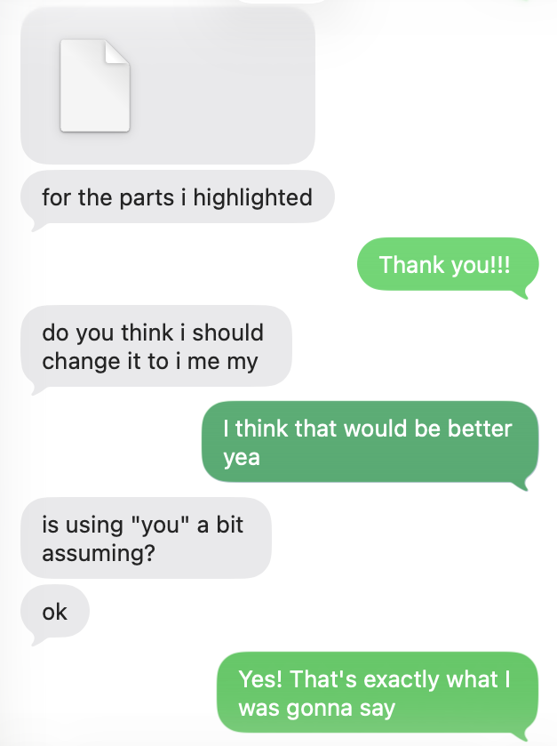

I started loving editing when I taught writing to ESL college students, primarily Mandarin speakers.
It felt so intimate to sit with someone, toy with their thoughts and doubts while helping them find the words to express them. I felt lucky to have these exchanges.
It came as a surprise to me that the most important skills for editing had nothing to do with writing or language at all.


It was about patience, holding back your own instincts, knowing when not to touch something and being entirely in service of someone else's vision.